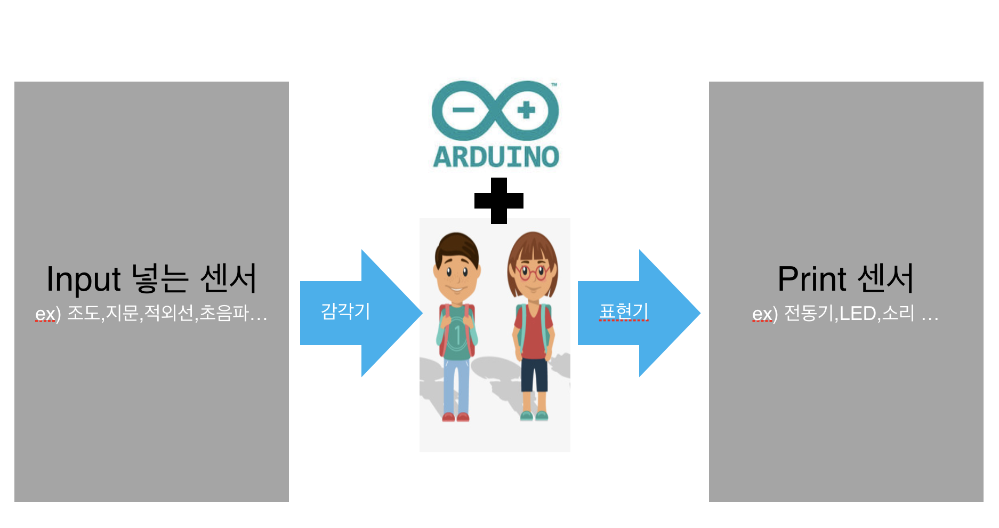
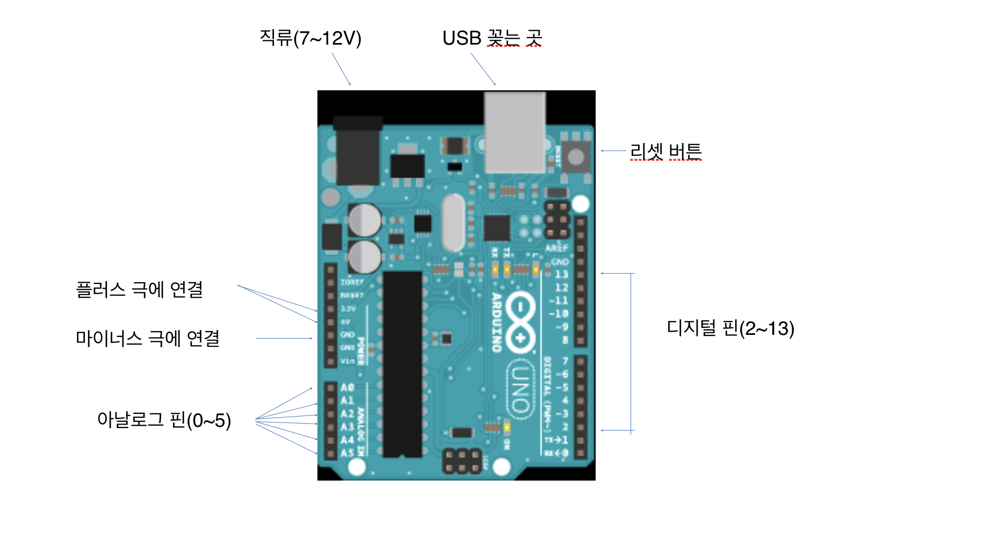
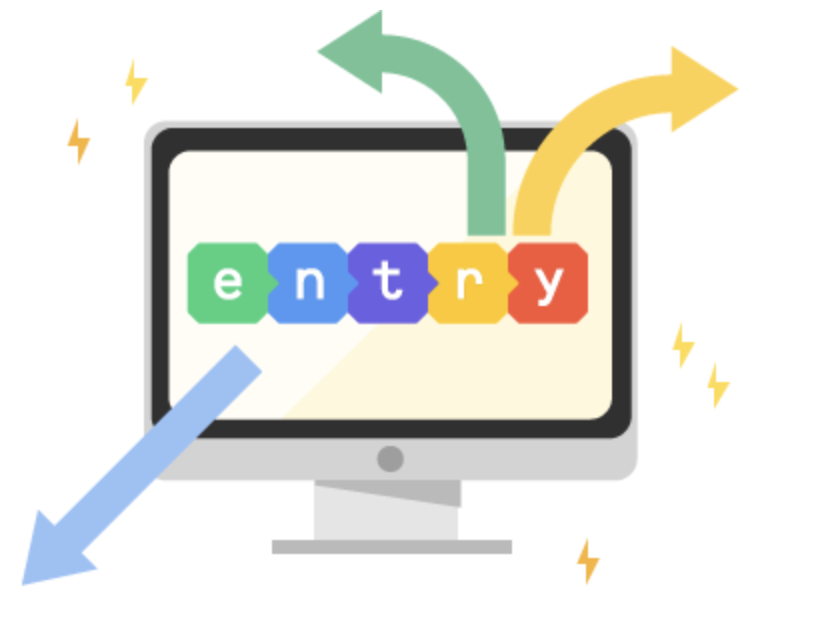

아두이노는 자신의 아이디어를 구현하기 위한 학습용 디지털 제작 도구 중 하나이다.
'아주 친한 친구'라는 뜻을 가지고 있으며 2005년 이탈리아에서 시작되었고 마이크컨트롤러 보드와 관련된 개발 도구 및 환경을 모두 제공한다.
위의 로고는 무한대를 뜻한다.
먼저 아두이노를 배우기 전 아두이노를 이용하기 위한 기본 지식들을 알아보자.
1. 전기란? 원자는 원자핵과 전자로 구성되며, 그 개수가 동일하여 전기적으로 평형을 유지한다.
외부의 충격 및 기타 이상 현상으로 전자가 외부로 이동하게 되면 전기적 평형상태가 깨져 전기 성질을 가지게 되는데,
이를 전하라 하고, 전하가 움직이는 현상을 전기가 흐른다(전류)라고 이야기 한다.
2. 전기의 종류
-직류(DC): 시간에 관계엾이 방향과 크기가 일정하게 흐는 전류. ex)건전지
-교류(AC): 시간에 따라 주기적으로 전류의 방향이 변하는 전류. ex)가정에서 사용하는 전기
3. 옴의 법칙
-전압(V): 전류가 흐를 때의 압력.
-전류(I): 전하가 이동하는 현상.
-저항(R): 전기의 흐름을 방해하는 성질.
-I = V/R
4. 전기의 중요한 법칙
-키르히호프의 제 1법칙(전하량 보존 법칙): 일정한 양만큼의 전류가 들어왔으면 그만큼의 전류가 나가는 법칙.
-키르히호프의 제 2법칙: 저항선의 양 끝의 전압(옴의 법칙에 의해 전기 저항과 전류의 세기의 곱은 같음)의 합은 그 회로의 전압.
그렇다면 본격적으로 아두이노에 대해 알아보자.아두이노는 어떻게 작동하는 것일까?

-우노 보드 사용법

-빵판 사용법
코딩 틀에는 엔트리, 스크래치,아두이노 등이 있지만 우리는 그중에서 엔트리를 쓰고 있다.
엔트리는 코딩 교육용 프로그램 중 하나이고 자바 스크립트 기반의 블럭코딩 툴이며 여러 보드와 호환된다는 장점이 있다.
